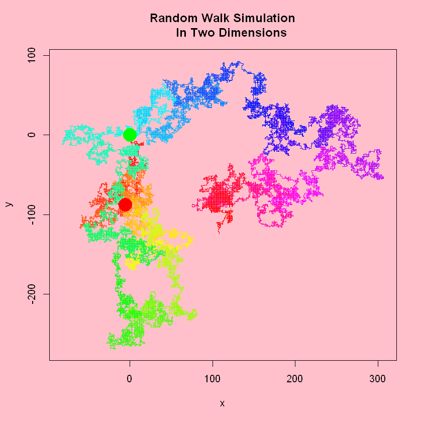

Random Walk¶
[13]:
# compute path (make an empty matrix of n length)
n <- 100000
rw <- matrix(0, ncol = 2, nrow = n)
[14]:
# generate the indices to set the deltas
indx <- cbind(seq(n), sample(c(1, 2), n, TRUE))
[15]:
# now set seed and randomly sample the values
set.seed(1)
rw[indx] <- sample(c(-1, 1), n, TRUE)
[16]:
# cumsum the columns
rw[,1] <- cumsum(rw[, 1])
rw[, 2] <- cumsum(rw[, 2])
[18]:
#Set the background colour of the plot
par(bg = "pink")
#Plot the axes and title etc. of the plot
plot(0,type="n",xlab="x",ylab="y",main="Random Walk Simulation
In Two Dimensions",col=1:10,xlim=range(rw[,1]),ylim=range(rw[,2]))
# use 'segments' to color each path
segments(head(rw[, 1], -1)
, head(rw[, 2], -1)
, tail(rw[, 1], -1)
, tail(rw[, 2], -1)
, col = rainbow(nrow(rw) -1) # a range of colors, could also choose heat.colors, terrain.colors, topo.colors, cm.colors
)
#Define the first and last point
end<-cbind(rw[10000,1],rw[10000,2])
start<-cbind(0,0)
#Colour and display the last and beginning point of the plot
points(start,pch=16,col="green", cex = 3)
points(end,pch=16,col="red", cex = 3)

[ ]: